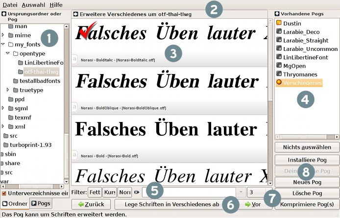
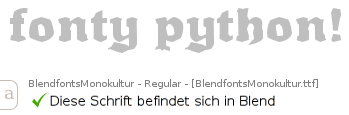
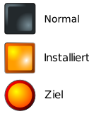

|
FontyPython ist ein Werkzeug zur Schriftvorschau und -verwaltung für GNU/Linux. Sein Zweck ist es, Schriften zu betrachten, sammeln und ordnen. Sie werden im Heimatverzeichnis installiert und deinstalliert und sind so anderen Anwendungen nach Bedarf zugänglich.
Das Layout | Die Menüs | Schnellzugriff | Tipps | Regionale Anpassung | Fehler | Lizenz
Über den Grundgedanken
Sie wählen Schriften aus und stellen Sie in "Pogs" zusammen. Sie installieren ein Pog und alle darin versammelten Schriftarten sind für andere Programme verfügbar. Werden sie nicht mehr gebraucht, deinstallieren Sie das Pog wieder.
In das Wort "Pog" bin ich selbst hineingestolpert, es leitet sich von der Mitte des Wortes "Typografie" ab. Es bedeutet soviel wie "Sammlung" oder "Gruppe" oder "Bündel" oder "Schachtel" oder "Kasten" oder "Stapel" oder "Haufen" — Sie wissen was ich meine.
Die Schriftdateien werden im Verzeichnisbaum weder verschoben, noch werden Kopien gemacht; bei der Installation werden nur symbolische Verknüpfungen (Links) mit den Originalen im Heimatverzeichnis unter ".fonts" angelegt.
Sie haben z.B. ein Pog "Zoo Logo", in dem Sie alle Schriften abgelegt haben, um ein Logo für einen Zoo zu entwerfen. Anschließend reicht die Installation des Pogs "Zoo Logo". Alle Schriften erscheinen nun in Inkscape, Gimp und anderen Anwendungen. Gehen Sie ganz normal an Ihre Arbeit und machen sich keine Gedanken mehr über die Schriften. Ist die Arbeit getan, deinstallieren Sie "Zoo Logo" und alle Schriften sind wieder aus den Schrift-Auswahldialogen verschwunden. (D.h. die Verknüpfungen/Links mit den originalen Schriftdateien sind aus dem .fonts-Ordner im Heimatverzeichnis entfernt worden, was einer Deinstallation gleichkommt.)
Fonty eignet sich auch hervorragend zum Betrachten von Schriften, egal wo sie gespeichert sind und ohne systemweite Installation. Es hat eine Kommandozeilen-Schnittstelle, von der aus Pogs installiert/deinstalliert werden können, ohne die grafische Oberfläche starten zu müssen. Eine nette Besonderheit!
Verborgene Schriften im Heimatverzeichnis
Im Heimatverzeichnis befindet sich ein verborgener Ordner ".fonts". Der Punkt kennzeichnet ihn als versteckt. Darin finden sich (eventuell) die unterschiedlichsten Arten von Schriftdateien, die alle genutzt werden können. Ganz so einfach ist es leider nicht, weil unter GNU/Linux Schriften auch an anderen Stellen systemweit installiert werden. Aber dieser Ordner ist bestens geeignet, eigene Schriften zu installieren. Und da man normalerweise nicht direkt in diesen Ordner wechselt, müssen Sie sich weiter keine Gedanken darum machen.
Letzte Neuerungen
- (September 2009) Pogs können archiviert werden. Alle Schriften darin werden in einer komprimierten Datei zusammengefasst z.B. um sie weiter zu verteilen.
- (Juni 2009) Es gibt die Möglichkeit Unterverzeichnisse einzuschließen. Siehe auch die Kommandozeilenoption "-A".
- (Juni 2009) Neue Tastenkürzel. Strg+PfeilLinks and Strg+PfeilRechts blättert durch die Seiten.
- (Juni 2009) Mehrfachauswahl von Pogs. In einem Schritt können viele Pogs entfernt, installiert oder deinstalliert werden.

Das Layout

Die Benutzeroberfläche ist von links nach rechts aufgebaut. Zunächst wählen Sie ganz links einen Ursprung aus, dann die einzelnen Schriften im mittleren Bereich. Schließlich legen Sie ein "Pog" als Ziel fest, unter dem die Schriften gespeichert werden.

|
Woher kommen die Schriften?
Sie können einen Ordner oder ein anderes Pog als Ursprung verwenden, wählen Sie einfach den entsprechenden Reiter.
Manchmal ist es sinnvoll, wenn man Schriften aus einem anderen Pog wählt (es ist viel schneller als ein ganzes Laufwerk zu durchsuchen). Also auch Pogs können Ursprung sein — lassen Sie sich davon nicht verwirren!
Behalten Sie immer die Zeile bei 2 (Statusanzeige) im Auge.
Unterverzeichnisse: Unterhalb der Ordneransicht befindet sich ein Kontrollkästchen "Unterverzeichnisse einschliessen", d.h. alle Schriften in Unterverzeichnissen des gewählten Ordners werden in der Vorschau mit angezeigt. Auf diese Weise können Sie mit sehr vielen Schriften gleichzeitig arbeiten — Geschwindigkeit und Stabilität leiden aber möglicherweise darunter.
|
 |
Statusanzeige
Diese Zeile informiert Sie über die aktuelle Auswahl von Ursprung und Ziel. Zusammen mit der Hilfezeile am unteren Fensterrand gibt sie Auskunft darüber, welche Aktionen möglich oder nicht möglich sind.
|
 |
Die Vorschau
Die Schriften im links markierten Ordner oder Pog werden hier angezeigt.
Nota bene: Statt des erwarteten Textes erscheint möglicherweise eine Fehlermeldung. Diese Schriften können entweder aus irgendwelchen Gründen nicht geöffnet werden oder FontyPython kann sie nicht darstellen. Trotzdem lassen sie sich diese "schlechten" Schriften auswählen, in Pogs speichern und installieren. Der Grund ist, daß FontyPython (leider immer noch nicht) Schriften nicht so zuverlässig darstellen kann wie andere Anwendung, z.B. Inkscape oder The Gimp. Also, auch wenn Fonty behauptet eine Schrift sei "schlecht", ignorieren Sie die Fehlermeldung und behandeln Sie sie wie jede andere Schrift.
Tipp: Die Schriftgröße kann sehr schnell mit der Kombination Strg + Mausrad (auf/ab) verändert werden.
Dieser Bereich ermöglicht unterschiedliche Aktionen, je nachdem was ausgewählt ist:
-
Es ist ein Ursprungsordner oder Pog und ein Ziel ("Vorhandene Pogs") markiert

Schriften können angehakt und im Pog gespeichert werden.
Die Elemente im Einzelnen
- Schalter für die Zeichentabelle: Wenn gucharmap oder kfontview auf Ihrem System installiert ist, wird dieser Schalter angezeigt. Damit können Sie eines der Programme starten, die die vollständige Zeichentabelle der Schrift anzeigen. Welches Programm benutzt werden soll, kann im Dialog Optionen eingestellt werden.
- Auswahlbereich: Ein Klick in diesen Bereich hakt oder kreuzt die Schrift an.
Ein Haken bedeutet die Schrift kann in das markierte Pog übernommen werden — also in das in der rechten Liste ausgewählte. Ein Kreuz bedeutet die Schrift wird aus dem gerade angezeigten Pog entfernt — das Pog also, das in der linken Liste ausgewählt ist.
- Schriftinformationen: Hier werden die Familie, der Stil sowie der Dateiname eingeblendet. Diese Angaben werden beim Filtern der Vorschau ausgewertet.
-
Es ist nur ein Ursprungsordner markiert

Die Schriften können weder angehakt noch angekreuzt werden. Optisch gibt es keinen Unterschied zum vorher beschriebenen Zustand.
-
Es ist nur links ein Pog markiert

Sie kreuzen die Schriften an, die aus dem Pog entfernt werden sollen.
-
Gesperrte Schriften

Die ausgegraute Anzeige weist auf Schriften hin, die sich bereits im Ziel(-pog) befinden. So wird verhindert, dass Schriften mehrfach in einem Pog gespeichert werden.
|
 |
Status der Pogs
|

|
Diese Symbole zeigen an, ob ein Pog installiert ist.
- Installierte Pogs können nicht verändert werden.
- Welches Pog erweitert werden soll ("Ziel") bestimmen Sie rechts.
- Mit Strg + Klick können mehrere Pogs gleichzeitig ausgewählt werden.
|
|
|
|
Der Filter
In der Vorschau erscheinen nur noch die Schriften, auf deren Angaben (vgl. Schriftinformationen) der hier eingegebene Text zutrifft. Wollen Sie z.B. nach Serifen filtern, schreiben Sie serif (und betätigen die Eingabetaste!)
Wollen Sie wieder zur ungefilterten Ansicht zurückkehren, benutzten Sie den Schalter "Filter löschen" bzw. leeren das Eingabefeld.
Für die Suche nach Standardstilen benutzen Sie die Wechselschalter "Fett", "Kursiv", "Normal". Ist z.B. der Schalter "Fett" eingedrückt werden nur noch Schriften angezeigt deren vollständiger Name das Wort "bold" (die englische Bezeichnung für fette Schriften) enthält. "Fett" und "Kursiv" lassen sich kombinieren, "Normal" kann nur allein aktiviert werden. Eine fette, normale Schrift wäre ziemlich unlogisch!
Tipp: Sicher ist Ihnen die Linie (|) in regular|normal
aufgefallen, wenn Sie den Schalter "Normal" betätigen. Das Eingabefeld erlaubt reguläre Ausdrücke für, alle die etwas davon verstehen. "|" bedeutet "ODER", es werden also nur Schriften ausgefiltert, auf die die Beschreibung "normal" ODER "regular" zutrifft.
ANMERKUNG: Es gibt einen Fehler, den ich noch nicht beheben konnte — wenn Sie keine Schriften sehen können, stellen Sie sicher, dass das Eingabefeld "Filter" leer ist und drücken, eventuell auch zweimal, die Eingabetaste.
|
 |
Der Hauptschalter
Dies ist der wichtigste Schalter. Er löst je nach der aktuellen Situation verschiedene Aktionen aus. Die Beschriftung des Schalters sollte einen klaren Hinweis darauf geben, was geschieht. Beachten Sie auch die Statusanzeige und die Hilfezeile.
|
 |
Navigation
Hier können Sie sich durch die "Seiten" bewegen. Benutzen Sie die "Vor"/"Zurück"-Schalter oder gehen direkt zu einer Seite über die Aufklappliste. Im Einstellungsdialog (Datei->Optionen oder Strg+O — für die deutsche Version) kann die Seitenlänge, d.h. die Schriften pro Seite, festgelegt werden. Dieser Ansatz soll den Speicherbedarf von FontyPython möglichst gering halten.
|
 |
Abteilung Pogs
Diese Schalter verändern die Ziel-Pogs ("Vorhandene Pogs"). Alle markierten Pogs können gelöscht, installiert, deinstalliert oder komprimiert werden. Oder Sie erstellen ein neues Pog. Mit "Nichts auswählen" entfernen Sie alle Markierungen.
|
Nach oben
Die Menüs
- Das Datei-Menü
- Optionen: Einstellungen für die Vorschau. Schnellzugriff: Strg+O oder Mittelklick auf die Vorschau.
- Überprüfe Schriften: Bestimmen Sie einen Ordner, der auf Schriften überprüft werden soll, die FontyPython immer wieder zum Absturz bringen. Der Rettungsring für genervte Nutzer.
- Bereinige Pog: Vielleicht sehen Sie in einem Pog gelb hervorgehobene Einträge. Ein Pog ist eigentlich nur eine Liste mit Dateipfaden zu den Schriften. Wurde eine Schrift umbenannt, verschoben oder gelöscht, führt der Eintrag ins Leere. Hier können Sie alle verwaisten Einträge aus einem Pog entfernen.
- Beenden: Raten Sie mal :)
- Das Auswahl-Menü
- ALLE Schriften im Ordner/Pog auswählen: Auch wenn nur wenige Schriften auf einer Seite angezeigt werden, befinden sich vielleicht viel mehr in dem Ordner/Pog. Diese werden alle in einem Durchgang angehakt bzw. angekreuzt.
- GESAMTE Auswahl aufheben: Alle Markierungen werden wieder entfernt.
Nach oben
Schnellzugriff
- Wenn die Schnellzugriffstasten nicht funktionieren, setzen Sie den Eingabefocus in das Filtertextfeld. Fragen Sie mich nicht warum....
- Escape schliesst Anwendung, Dialoge oder Hilfe.
- Strg+PfeilLinks und Strg+PfeilRechts haben die gleiche Wirkung wie die "Vor"/"Zurück"-Schalter.
- Mittelklick (Mausrad) in der Vorschau (vgl. Punkt 3 Die Vorschau) öffnet den Einstellungsdialog.
- Strg + Mausrad vergrößert/verkleinert die Schriftgröße direkt.
Nach oben
Tipps
- FontyPython hat auch eine Kommandozeilen-Schnittstelle. Probieren Sie in einem Terminal:
fontypython --help
- Pog-Dateien sind lediglich Textdateien. Sie sind absichtlich sehr einfach gehalten. Hier ein paar Sachen, die Sie damit anstellen können:
Nach oben
Regionale Anpassung
- Wenn FontyPython nicht in Ihrer Sprache erscheint, liegt es wahrscheinlich daran, dass noch keine Übersetzung vorliegt (gegenwärtig sind Englisch, Französisch, Italienisch und Deutsch verfügbar). Oder es fehlen bestimmte Sprachpakete Ihrer Distribution.
Suchen Sie mit Ihrem Packetmanager nach Namen wie:
- language-support-fr
- language-support-en
- language-pack-gnome-fr
Dies ist besonders wichtig, damit die Standardelemente in GTK übersetzt werden.
(Die beiden letzten Buchstaben werden durch Ihren Ländercode ersetzt.)
- ENKODIERUNGS HINWEISE:
Überprüfen Sie die Variable LANG . Öffnen Sie ein Terminal und schreiben: echo $LANG
Ist die Ausgabe "C" oder "POSIX" oder ist leer, ist nur die ANSI/ASCII-Kodierung verfügbar. Deshalb können Schriften und Pogs mit Buchstaben im Namen, die nicht zu den 128 Zeichen des ANSI/ASCII-Satzes gehören, eventuell nicht angezeigt werden oder Fehlfunktionen verursachen. Dieser Art Fehler sind schwer zu finden, aber ich tue mein Bestes.
Um zu sehen, welche Enkodierungen Ihr System sonst noch bietet, geben Sie folgenden Befehl ein:locale -a
Sie sollten eine mehr oder weniger lange Liste sehen. Falls ein Eintrag dabei ist, der mit "utf8" endet, haben Sie gute Chancen. Passen Sie die Umgebungsvariablen mit den entsprechenden Werkzeugen an oder setzen sie probeweise mit (für Deutsch):
export LANG=de_DE.utf8 Danach starten Sie Fonty erneut vom selben Terminal aus.
- Wenn Sie bei der Übersetzung helfen wollen, nehmen Sie Kontakt mit der Mailingliste auf: fontypython@googlegroups.com
Nach oben
Fontys Fehler
- Fatale Abstürze und gefährliche Schriften: Manche Schriften bleiben FontyPython im Hals stecken und bringen es zum Absturz. Kurz darauf sollte ein Fenster erscheinen, das die Schuldige nennt. Sie sollten diese Schrift in einen anderen Ordner verschieben. Starten Sie Fonty nocheinmal. Bleiben Sie wieder hängen, öffnen Sie aus dem Ordner ".fontypython" in Ihrem Heimatverzeichnis die Datei "lastFontBeforeSegfault". Hier finden Sie den Pfad zur letzten Schrift, die vor dem Absturz geöffnet wurde!
- Überprüfe Schriften: FontyPython bietet auch die Möglichkeit, ganze Ordner (mit Unterordner) nach möglicherweise beschädigten Schriften zu durchsuchen (vgl. Das Datei-Menü). Alle als bedenklich eingestuften Schriften werden in der Datei "~/.fontypython/segfonts" notiert. Anschließend überspringt FontyPython diese Schriften und stellt sie nur noch symbolisch mit gelben Hintergrund dar. Finden Sie FontyPython läuft zu unstabil, machen Sie diesen Test!
Der Test kann auch von der Kommandozeile gestartet werden: fontypython -c /ein/pfad.
- Fehler melden Sie bitte an https://savannah.nongnu.org/bugs/?group=fontypython. Hilfreich ist, wenn Sie FontyPython von einem Terminal aus starten. So sehen Sie alle Fehlermeldungen.
- Beim Start sucht FontyPython nach Pog-Dateien (".fontypython/xxx.pog"). Kann aus irgendeinem Grund eine Datei nicht gelesen werden, wird sie in "xxx.badpog" umbenannt. Möchte Sie den Grund wissen, spielen Sie Detektiv.
- In der Datei "~/.fontypython/badfiles" merkt sich FontyPython alle Schriften, die nicht geöffnet werden konnten. Sie lässt sich mit jedem Texteditor betrachten.
Nach oben
Lizenz
Fonty Python steht unter Copyright (C) 2006, 2007, 2008, 2009 Donn.C.Ingle.
Diese Datei ist Teil von Fonty Python.
Fonty Python ist Freie Software: Sie können sie weiterverbreiten und/oder verändern
nach den Bestimmungen der GNU General Public License wie sie von der Free Software Foundation
veröffentlicht wird. Entweder in der Version 3, oder jeder späteren Version.
Fonty Python wird in der Hoffnung herausgegeben nützlich zu sein,
aber OHNE JEGLICHE GARANTIE; auch ohne die stillschweigende Garantie
der HANDELSFÄHIGKEIT oder der ANWENDBARKEIT FÜR EINEN BESTIMMTEN ZWECK.
Näheres erfahren Sie in der GNU General Public License.
Mit FontyPython sollten Sie eine Kopie der GNU General Public License
erhalten haben. Falls nicht, schlagen Sie unter http://www.gnu.org/licenses/ nach.
Nach oben
|